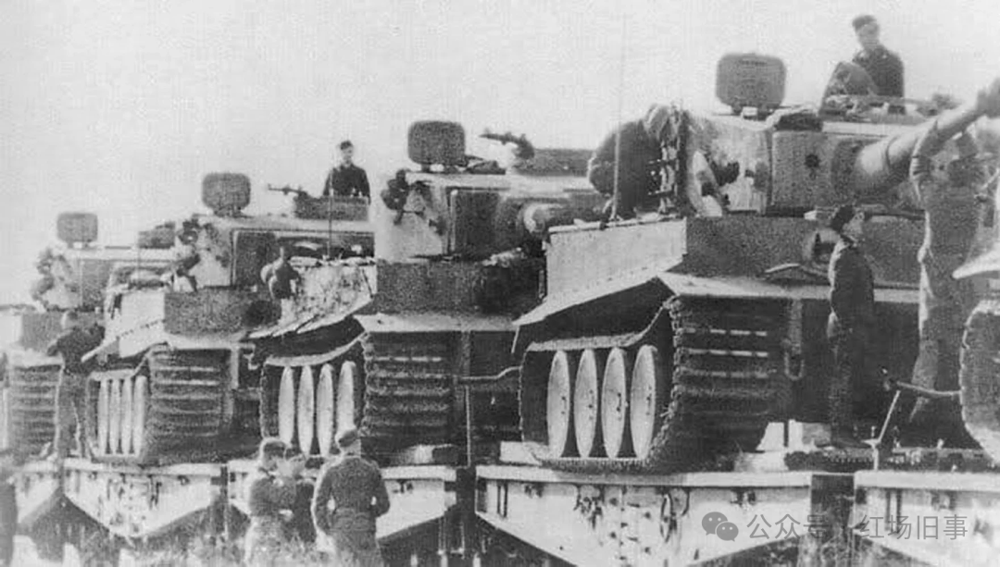
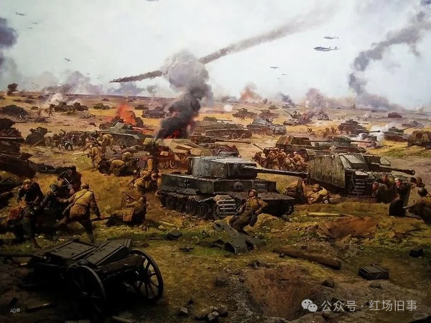
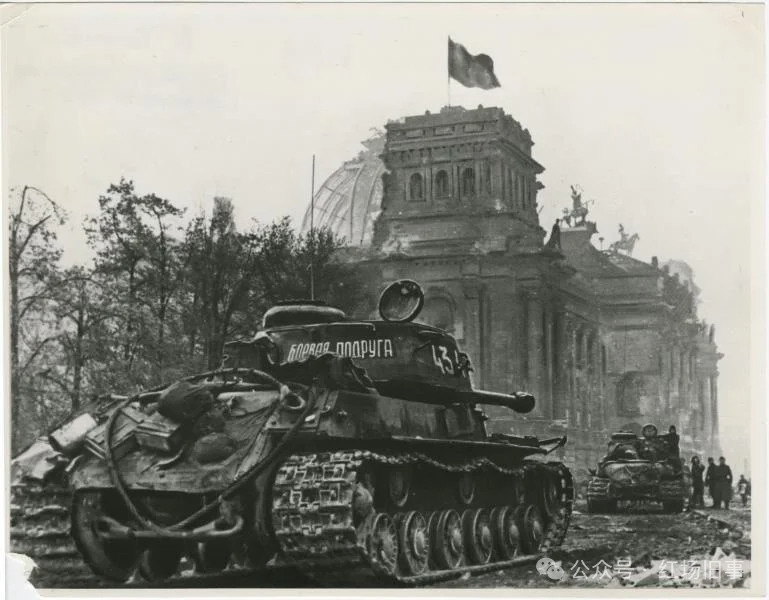
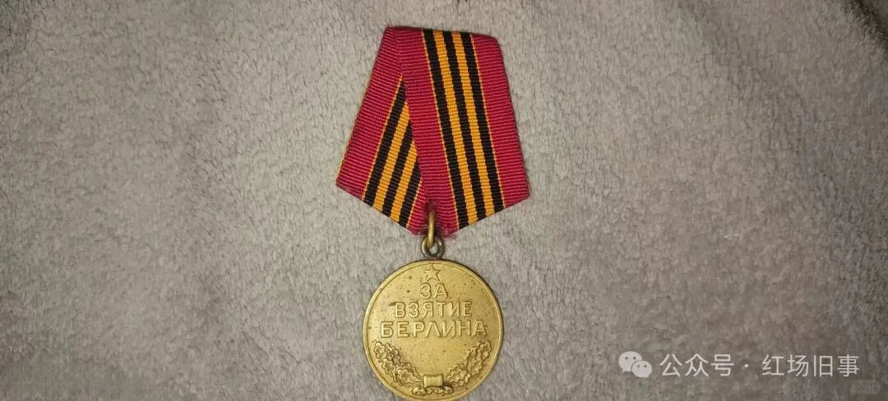
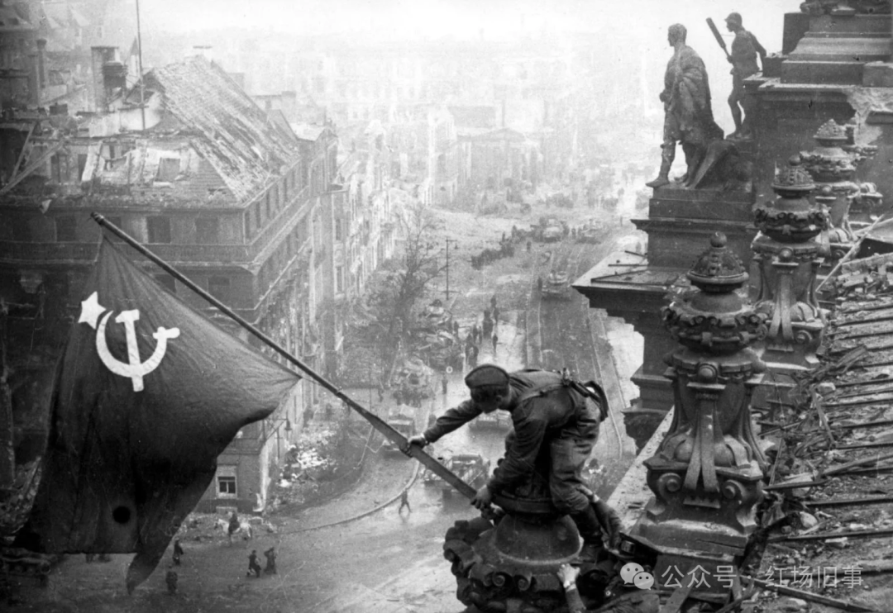
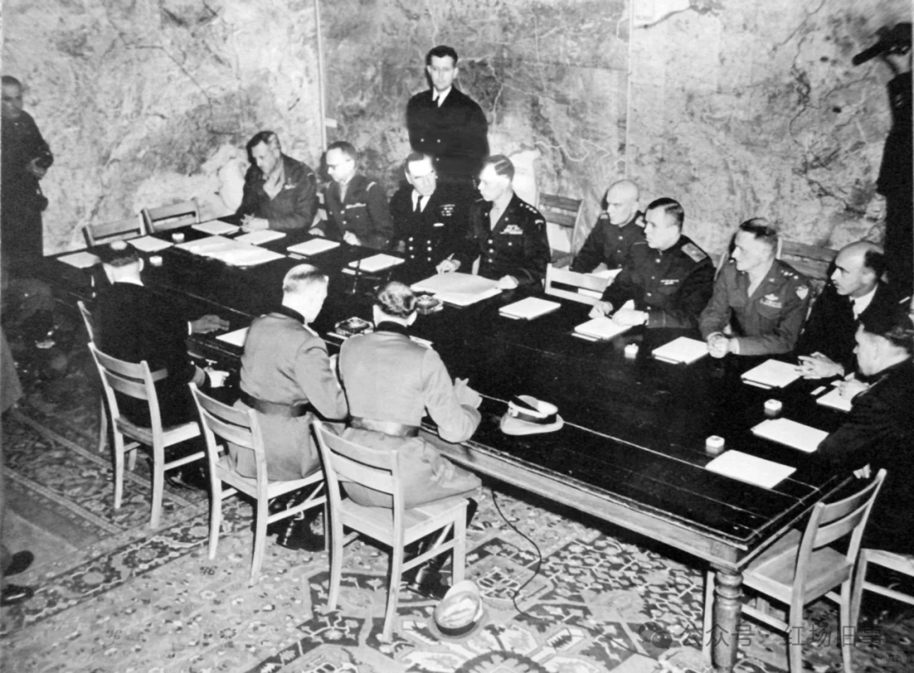

从库尔斯克到柏林：红军踏平欧洲的最后一千里，是用什么铺成的？
文字与图片版权归各自权利人所有。 查看公众号原文 ↗
1943年7月5日，库尔斯克的天空被钢铁遮蔽凌晨2时，苏军先发制人的炮击撕裂了夜幕。几个小时后，德军发起进攻——“堡垒”计划正式启动。这是人类历史上规模最大的坦克会战。双方共投入士兵约280万名、坦克近8000辆、飞机超过5000架。在库尔斯克突出部，德军集结了东线全部装甲师的近70%，配备了新式“虎”式和“豹”式坦克；苏军则投入了全国坦克总量的46%以上。

这场战役从第一天起就是绞肉机。德军“虎”式坦克的88毫米炮能在1500米外击穿T-34，而T-34的76毫米炮必须在500米内才能有效还击。苏军士兵清楚这一点。他们开着坦克全速冲进德军阵型，用数量弥补质量，用近战抵消技术差距。7月12日，普罗霍洛夫卡。双方1200辆坦克和自行火炮在15平方公里内迎头相撞。坦克残骸堆积如山，浓烟遮蔽了太阳。一名参战者回忆：“坦克就像庞大的象群，在火海中挣扎、燃烧、死去。”战斗结束时，德军虽然摧毁了大量苏军坦克，却未能达成任何战略目标。更重要的是，希特勒得知盟军在西西里岛登陆，决定从东线抽调兵力。SS装甲军被调往意大利，德军在东线的最后一次战略进攻就此夭折。

库尔斯克之后，主动权永远移交苏军。斯大林评价：“如果说斯大林格勒会战预告了德国法西斯军队的覆灭，那么库尔斯克会战就把它推到了覆灭的边缘。”
一、解放东欧，还是建立“卫星国”？1944年，红军开始向西推进。这一年，苏军发动了十次“斯大林突击”，将战线从第聂伯河推到维斯瓦河，从波罗的海推到喀尔巴阡山。红军所到之处，纳粹旗帜被摘下。但挂上去的不一定是自由。波兰：1944年8月，华沙起义爆发。抵抗力量期望苏军支援，但红军在维斯瓦河对岸停止前进两个月，眼睁睁看着德军将起义镇压下去。等到苏军进入华沙时，这座城市已成废墟。罗马尼亚和保加利亚：1944年，苏军进入后，君主制被废除，共产党领导的政府迅速建立。匈牙利：1945年，非共产党在选举中获胜。但共产党掌握了秘密警察，通过恐吓和逮捕逐步掌控政权。1947年选举被操纵，共产党获胜，1949年其他政党被取缔。捷克斯洛伐克：战前的中欧民主国家。1948年，在苏联支持下，共产党发动政变，非共产党领导人被迫辞职或流亡。斯大林要的不是“解放”，是“缓冲带”。经历过两次从西面而来的入侵（一战德国、二战纳粹），他决心在苏联西部边界之外建立一层亲苏政权构成的防护区。这些国家被称为“卫星国”——它们围绕苏联运转，轨道由莫斯科划定。雅尔塔会议上，罗斯福和丘吉尔接受了苏联对东欧的影响力，但坚持“自由选举”。斯大林口头同意，转身却用军队、秘密警察和操纵选举确保了共产党上台。1946年，丘吉尔在富尔顿发表“铁幕演说”：“从波罗的海的什切青到亚得里亚海的的里雅斯特，一道铁幕横跨欧洲大陆。”冷战的前奏，在二战结束前已经奏响。
二、柏林：纳粹心脏的最后200米1945年4月16日，柏林战役打响。苏军集中250万部队、4.2万门火炮、6250辆坦克、7500架飞机。

第一道障碍是泽洛夫高地。朱可夫原计划用143盏探照灯照亮战场、震慑德军，但晨雾让灯光反而为德军指明了目标。苏军第一天仅推进6公里，伤亡惨重。斯大林在电话里催促，朱可夫把预备队也投入了绞肉机。4月18日，泽洛夫高地被攻克，柏林的门户敞开。4月20日，希特勒生日那天，苏军远程炮兵首次向柏林城内开炮。4月25日，苏军完成对柏林的合围。同一天，美军和苏军在易北河畔的托尔高会师。最后的决战在国会大厦展开。这座建筑被德军改造成堡垒：窗户用砖封死，只留射击孔，周围挖了战壕。苏军第3突击集团军的9个师分到了9面突击红旗——谁先插上国会大厦，谁就是英雄。

攻克柏林奖章4月30日，战斗进入白热化。下午2时25分，中尉别列斯特、中士叶戈罗夫和下士坎塔里亚冲进大厦，在楼梯和走廊里逐屋争夺后，爬上楼顶，把红旗插在破损的雕像上。当晚22时40分，另一支部队的士兵米宁也插上了一面红旗。他后来抱怨：“我们最先到达，但历史记住的是别人。”同一天下午，希特勒在总理府地下室举枪自杀。5月2日，柏林守军投降。柏林战役中，苏军阵亡78291人，受伤274184人。
三、那张著名的照片，是摆拍的全世界看到的那张《胜利旗帜插到帝国国会大厦》，不是4月30日拍的。

塔斯社记者哈尔杰伊5月2日抵达柏林。大厦已经被攻克，战斗基本结束。他带着从莫斯科带来的红旗——红旗是他用桌布缝制的，镰刀锤子是一位裁缝朋友帮忙剪的——找到三名士兵，让他们爬上楼顶，摆出插旗的姿势。哈尔杰伊拍了36张。选出来的那张，背景的黑烟是后期加上去的，为了让画面更有“战争感”。一名士兵手腕上原本戴着两块手表，发表时被修图修掉了一块。这张照片是宣传，但它背后有真实的牺牲。那位真正在4月30日插旗的士兵米宁，直到1995年才被追认为英雄。
四、真相与神话：代价是什么？1945年5月9日，德军签署无条件投降书。

从1941年6月到1945年5月，苏联军民死亡约2700万人，其中军人约866万。每五个苏联人，就有一个没能活到胜利那天。柏林战役的最后几天，苏军士兵的疯狂复仇难以控制。强奸、抢劫、纵火——红军纪律一度崩溃。这不是官方叙事愿意提及的章节，但它真实存在。战争把人变成兽，胜利者也会。5月9日之后，苏联成为欧洲最强大的陆权国家。从波罗的海到黑海，从易北河到亚得里亚海，红军驻防的土地，将在未来44年里被称为“东方集团”。但胜利的果实带着苦涩。那些在库尔斯克迎着“虎”式坦克冲锋的士兵，那些在泽洛夫高地踩着战友尸体前进的士兵，那些把红旗插上国会大厦的士兵，大多没能活着回家。活着的，也回不到战前那个苏联了。2700万人消失后留下的空位，一代人都填不满。
结语：最后一千公里从库尔斯克到柏林，直线距离不到1600公里。红军走了整整22个月。这22个月里，他们打赢了人类史上最大的坦克战，解放（或占领）了半个欧洲，攻陷了第三帝国的心脏。但每一步都踩在自己人的血上。库尔斯克草原被坦克履带翻起的黑土里，埋着几十万具尸骨。维斯瓦河岸的泥土，掺着华沙起义者的灰烬。柏林废墟的每一块砖下，都有苏军士兵的弹壳。苏联用一代人换了胜利。这一代人，后来被称为“伟大的一代”。伟大意味着什么？意味着他们做了别人做不到的事，也意味着他们付出了别人付不起的代价。那张摆拍的照片，那个被修掉的手表，那面被添上黑烟的旗帜——它们掩盖了一些真相，也象征着一个更大的真相：胜利需要神话，而神话需要修饰。但修饰改变不了最根本的事实：1945年5月2日，柏林的上空，确实飘着红旗。